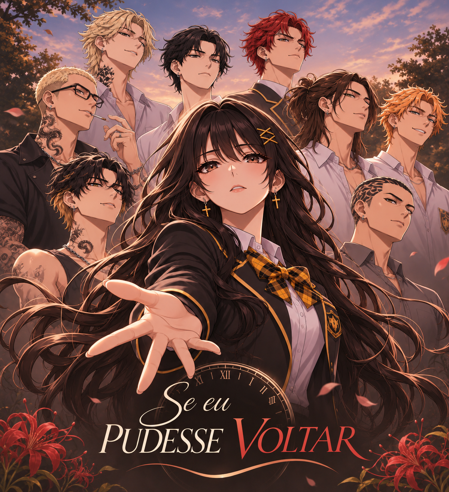

Se eu pudesse voltar...

Aos 28 anos, ela sente que deixou a vida passar. Nunca teve coragem de fazer amigos, de se apaixonar ou de viver a adolescência. Uma noite, ela deseja voltar no tempo e acorda aos 16 anos, de volta à escola onde tudo começou. Dessa vez, ela não vai ser a garota invisível. Com a cabeça de uma adulta e uma força secreta herdada da família, ela decide viver tudo o que deixou para trás: as amizades, as aventuras e o amor. E o amor não vai faltar. O líder confiante da gangue jura que já a conhece. O braço direito, sério e protetor, observa tudo em silêncio. O ruivo encrenqueiro não para de provocá-la. E o garoto gentil, que sempre gostou dela, é alguém que ela perdeu no futuro e quer salvar a qualquer custo. Mas o mundo das gangues é perigoso, e cada mudança no passado tem um preço. Suas escolhas vão decidir por quem ela se apaixona, quem fica ao seu lado e quem sobrevive. Romance, amizade, gangues e uma segunda chance para viver de verdade.
Créditos
- Criado por Ewellyn Melo
- Trilha sonora: piano original composto para o jogo